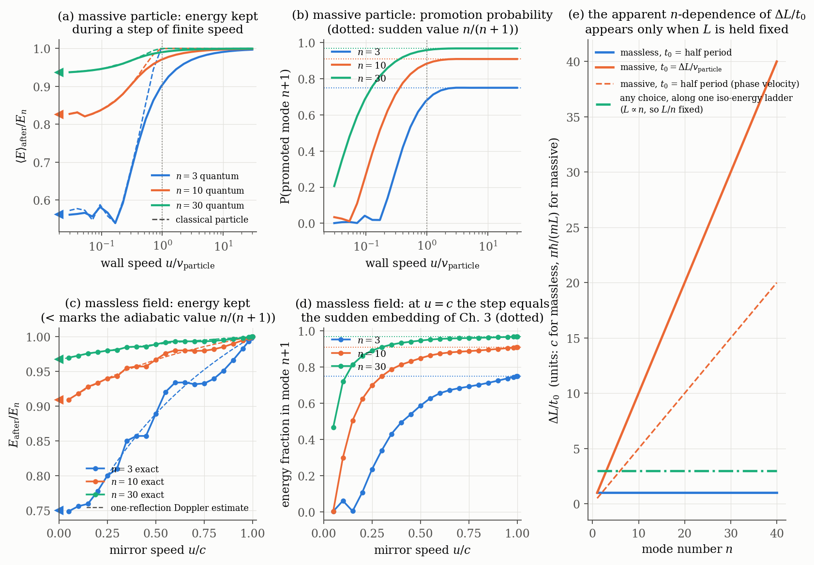
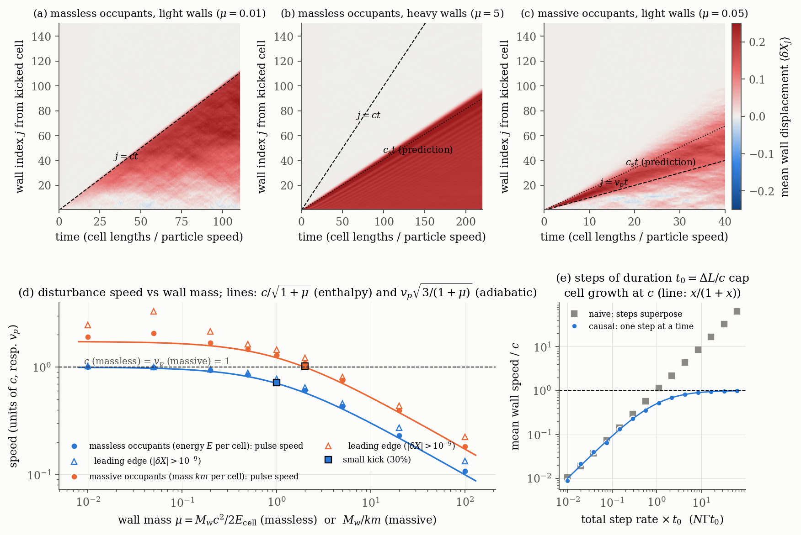

<title>Step Speed and Light Speed</title>
<link rel="preconnect" href="https://fonts.googleapis.com">
<link rel="preconnect" href="https://fonts.gstatic.com" crossorigin>
<link rel="stylesheet" href="https://fonts.googleapis.com/css2?family=Source+Serif+4:ital,opsz,wght@0,8..60,400;0,8..60,600;1,8..60,400&family=IBM+Plex+Sans+Condensed:wght@500;600&family=IBM+Plex+Mono:wght@400;500&display=swap">
<script>
window.MathJax = {
  tex: { inlineMath: [["\\(", "\\)"]], displayMath: [["\\[", "\\]"]] },
  svg: { fontCache: "global" },
  options: { enableMenu: false }
};
</script>
<script src="https://cdnjs.cloudflare.com/ajax/libs/mathjax/3.2.2/es5/tex-svg.js"></script>
<style>
:root {
  --bg: #f6f7f5;
  --paper: #fdfdfc;
  --ink: #17201c;
  --ink-2: #48534e;
  --muted: #76807b;
  --rule: #d9ddd9;
  --accent: #1f5fae;
  --accent-soft: #e3ecf8;
  --warm: #b8521f;
  --warm-soft: #f8e7dc;
  --ok: #1c7a55;
  --ok-soft: #dff1e8;
  --plate: #fcfcfb;
  --serif: "Source Serif 4", "Source Serif Pro", Georgia, "Times New Roman", serif;
  --label: "IBM Plex Sans Condensed", "Arial Narrow", "Helvetica Neue", Arial, sans-serif;
  --mono: "IBM Plex Mono", ui-monospace, "SFMono-Regular", Menlo, Consolas, monospace;
}
@media (prefers-color-scheme: dark) {
  :root:not([data-theme="light"]) {
    color-scheme: dark;
    --bg: #121615; --paper: #181d1b; --ink: #e6ebe8; --ink-2: #b7c0bb; --muted: #8b958f;
    --rule: #2e3633; --accent: #7fb0ec; --accent-soft: #1b2a3d; --warm: #eb9a6d; --warm-soft: #33241b;
    --ok: #6fcfa2; --ok-soft: #173026; --plate: #fcfcfb;
  }
}
:root[data-theme="dark"] {
  color-scheme: dark;
  --bg: #121615; --paper: #181d1b; --ink: #e6ebe8; --ink-2: #b7c0bb; --muted: #8b958f;
  --rule: #2e3633; --accent: #7fb0ec; --accent-soft: #1b2a3d; --warm: #eb9a6d; --warm-soft: #33241b;
  --ok: #6fcfa2; --ok-soft: #173026; --plate: #fcfcfb;
}
* { box-sizing: border-box; }
body {
  background: var(--bg); color: var(--ink); font-family: var(--serif);
  font-size: 17px; line-height: 1.62; margin: 0;
  padding-inline: 16px; padding-block: 40px 80px;
}
main { max-width: 760px; margin: 0 auto; display: flex; flex-direction: column; gap: 0; }
.wide { width: min(1120px, calc(100vw - 32px)); margin-left: 50%; transform: translateX(-50%); }
h1, h2, h3 { font-family: var(--label); font-weight: 600; text-wrap: balance; line-height: 1.2; color: var(--ink); }
h1 { font-size: clamp(30px, 5vw, 42px); margin: 6px 0 10px; letter-spacing: -0.005em; }
h2 { font-size: 26px; margin: 56px 0 8px; padding-top: 18px; border-top: 1px solid var(--rule); }
h3 { font-size: 19px; margin: 32px 0 6px; }
p { margin: 0 0 14px; }
.eyebrow { font-family: var(--label); text-transform: uppercase; letter-spacing: 0.08em; font-size: 13px; color: var(--muted); }
.deck { font-size: 19px; color: var(--ink-2); margin-bottom: 18px; }
.meta { font-family: var(--label); font-size: 14px; color: var(--muted); display: flex; flex-wrap: wrap; gap: 6px 18px; }
code, .mono { font-family: var(--mono); font-size: 0.86em; }
code { background: var(--accent-soft); padding: 1px 5px; border-radius: 3px; }
a { color: var(--accent); }
.answers { margin: 30px 0 8px; display: grid; gap: 14px; }
.answer { background: var(--paper); border: 1px solid var(--rule); border-radius: 6px; padding: 16px 20px; }
.answer h3 { margin: 0 0 6px; font-size: 17px; }
.answer h3 .q { color: var(--accent); margin-right: 6px; }
.answer p { margin: 0 0 8px; font-size: 16px; }
.answer p:last-child { margin-bottom: 0; }
.tag { font-family: var(--label); font-size: 12px; font-weight: 600; letter-spacing: 0.04em; text-transform: uppercase;
  padding: 1px 7px; border-radius: 3px; white-space: nowrap; vertical-align: 1px; }
.t-derived { background: var(--accent-soft); color: var(--accent); }
.t-computed { background: var(--ok-soft); color: var(--ok); }
.t-model { background: var(--warm-soft); color: var(--warm); }
.result { border-left: 3px solid var(--accent); background: var(--paper); padding: 12px 18px; margin: 16px 0 18px; border-radius: 0 5px 5px 0; }
.result p { margin: 0 0 8px; }
.result p:last-child { margin: 0; }
.result .rt { font-family: var(--label); font-weight: 600; font-size: 16px; margin-bottom: 4px; display: flex; flex-wrap: wrap; gap: 8px; align-items: baseline; }
.flag { border-left-color: var(--warm); }
.math { overflow-x: auto; overflow-y: hidden; margin: 6px 0 14px; }
figure { margin: 22px 0 26px; }
figure .plate { background: var(--plate); border: 1px solid var(--rule); border-radius: 6px; padding: 10px; overflow-x: auto; }
figure img { display: block; width: 100%; height: auto; min-width: 640px; }
figcaption { font-size: 15px; color: var(--ink-2); line-height: 1.55; margin: 10px auto 0; max-width: 760px; }
figcaption b { font-family: var(--label); font-weight: 600; color: var(--ink); }
.tablewrap { overflow-x: auto; margin: 14px 0 18px; }
table { border-collapse: collapse; width: 100%; font-size: 15px; line-height: 1.45; }
th, td { text-align: left; vertical-align: top; padding: 8px 10px; border-bottom: 1px solid var(--rule); }
th { font-family: var(--label); font-weight: 600; font-size: 14px; color: var(--ink-2); letter-spacing: 0.02em; }
td.num, .num { font-family: var(--mono); font-variant-numeric: tabular-nums; font-size: 14px; white-space: nowrap; }
ol.items, ul.items { padding-left: 22px; margin: 8px 0 16px; }
ol.items li, ul.items li { margin-bottom: 10px; }
.small { font-size: 15px; color: var(--ink-2); }
footer { margin-top: 56px; padding-top: 16px; border-top: 1px solid var(--rule); font-size: 14px; color: var(--muted); font-family: var(--label); }
@media (max-width: 560px) {
  body { font-size: 16px; }
  h2 { font-size: 22px; }
  .answer { padding: 14px 14px; }
}
</style>

<main>
<header>
  <div class="eyebrow">Expanding Quantum Box · v15 · working note 2</div>
  <h1>Step Speed and Light Speed</h1>
  <p class="deck">Does \(\Delta L = L/n = c\,t_0\) define a speed of light, why does \(c\) seem to depend on \(n\), and can the cell walls be given a mass that makes length disturbances travel at that speed? Abstract cells throughout: cell length is the fundamental variable.</p>
  <div class="meta"><span>25 Sept 2026</span><span>Follows: "Localizing the Iso-Energy Step"</span><span>Code: <span class="mono">v15/explorations/lightspeed/</span></span></div>
</header>

<section class="answers" aria-label="Short answers">
  <div class="answer">
    <h3><span class="q">Q1</span>Do the relations make sense, and does \(c\) depend on \(n\)?</h3>
    <p>They make sense once \(t_0\) is fixed by physics rather than chosen. \(\Delta L = L/n\) is half the de Broglie wavelength of the active particle, \(\pi\hbar/p\). It depends only on the ratio \(n/L\), so along one iso-energy ladder it is the same on every rung. The \(n\)-dependence you saw appears only when \(L\) is held fixed while \(n\) changes, which means comparing particles of different energy.</p>
    <p>The step duration is not free. The step keeps its energy only if the moving length does no work on the active particle, which requires \(\Delta L/t_0 \ge v_\text{particle}\). For massless matter, causality also requires \(\Delta L/t_0 \le c\). The two together force \(\Delta L/t_0 = c\) exactly, with \(t_0\) equal to half a wave period (\(t_0E=\pi\hbar\)) for every \(n\). That step turns out to be exactly the thesis's "sudden" transition. For massive matter the ratio is only bounded, \(v_\text{particle}\le \Delta L/t_0\le c\), so steps alone do not define a universal speed.</p>
  </div>
  <div class="answer">
    <h3><span class="q">Q2</span>Can the wall mass make the sound speed equal \(c\)?</h3>
    <p>Yes, in one way only: massless matter in the cells and zero bare wall mass. The inertia a length disturbance has to move is the matter's enthalpy plus the wall mass, which gives \(c_s = c/\sqrt{1+M_wc^2/2E_\text{cell}}\). This reaches \(c\) only as \(M_w\to0\) and never exceeds it. The same \(c\) then governs both the steps and the propagation, with no \(n\)-dependence.</p>
    <p>For massive matter, the choice \(M_w = 2\times\) (occupant mass per cell) makes the sound speed equal the particle speed for every \(n\). But that "\(c(n)\)" is the particle's own speed, it differs between species, and it is not a speed limit: the leading edge of a disturbance runs ahead of it.</p>
  </div>
</section>

<h2>1. What \(\Delta L\) and \(t_0\) really are</h2>
<p>In the state \(|n,L)\) the active particle has wavenumber \(k=n\pi/L\) and momentum \(p=\hbar k\). The iso-energy step generates</p>
<div class="math">\[ \Delta L=\frac{L}{n}=\frac{\lambda}{2}=\frac{\pi\hbar}{p}. \]</div>
<p>On an iso-energy ladder \(n/L\) is constant (Ch. 2), so \(\Delta L\) is the same on every rung. Writing \(\Delta L=c(n)\,t_0(n)\), any \(n\)-dependence of \(c\) can only come from \(t_0\), or from comparing different ladders (different energies).</p>
<div class="result">
  <div class="rt">The relation is a dispersion relation in disguise <span class="tag t-derived">Derived here</span></div>
  <p>With \(t_0\) equal to half a period, \(t_0=\pi/\omega=\pi\hbar/E\):</p>
  <div class="math">\[ \Delta L\,p=\pi\hbar,\qquad t_0\,E=\pi\hbar,\qquad \frac{\Delta L}{t_0}=\frac{E}{p}. \]</div>
  <p>For massless matter \(E=pc\), so \(\Delta L/t_0=c\) for every \(n\). For non-relativistic matter \(E/p=v/2\), the phase velocity, which depends on the particle's energy. Choosing \(t_0=\Delta L/v_g\) instead gives \(\Delta L/t_0=v_g\), the particle speed. Setting \(c=1\), \(t_0=1\) and \(L/n=1\) together is consistent. It amounts to measuring energy in units of \(\pi\hbar/t_0\) for the active quantum. It is not a new law.</p>
</div>

<h2>2. What fixes \(t_0\): the step must outrun the particle</h2>
<p>A step of finite duration is a wall that moves by \(\Delta L\) at speed \(u=\Delta L/t_0\). If the active particle hits the receding wall during the move, it is Doppler-shifted and loses energy, and the step is no longer iso-energetic. Classically this is avoided exactly when \(u\ge v_\text{particle}\). I solved the time-dependent Schrödinger equation for a box whose wall moves from \(L\) to \(L(n{+}1)/n\) at constant speed. I used Crank–Nicolson in comoving coordinates, with the Ch. 17 dilation term. Checks: a very fast wall reproduces the Ch. 3 overlap \(n/(n+1)\) to 5 digits, and a very slow wall gives the adiabatic \((n/(n+1))^2\) <span class="tag t-computed">Computed here</span>.</p>
<p>For massless matter I used Moore's exact moving-mirror solution, \(\phi=f(t-x)-f(t+x)\) with \(f(t+L(t))=f(t-L(t))\). The energy at any time is \(\int_{t-L}^{t+L}f'^2\,ds\).</p>

<figure class="wide">
  <div class="plate"></div>
  <figcaption><b>Figure A — A finite-speed step is iso-energetic only if the wall outruns the particle.</b> (a) Massive particle, \(n=3,10,30\). Energy kept after the step against wall speed in units of the particle speed. The classical ensemble (dashed) keeps all its energy exactly once \(u\ge v_\text{particle}\). The quantum curves approach smoothly: at \(u=v_\text{particle}\) they still lose 10%, 3.0% and 1.0% of the energy, about \(0.3/n\), because a box state has momentum components above \(p\). Triangles mark the adiabatic limit \((n/(n+1))^2\). (b) Probability of landing in the promoted mode \(n+1\). It reaches the thesis's sudden value \(n/(n+1)\) (dotted) only for \(u\gtrsim2v_\text{particle}\). (c) Massless field. Energy is lost for every \(u<c\) and kept exactly at \(u=c\) (1.00002, grid limit). The dashed one-reflection Doppler estimate \(1-(1-u)/(n(1+u))\) matches the exact values to 4 digits where it applies (\(u=0.5\), \(0.2\) for \(n=10\)). Triangles: adiabatic \(n/(n+1)\). (d) At \(u=c\) the energy in mode \(n+1\) is exactly the sudden-embedding value \(n/(n+1)\) (0.750, 0.9091, 0.9677). (e) \(\Delta L/t_0\) against \(n\) at fixed \(L\) for three choices of \(t_0\). Only the massless half-period choice is flat. Along one iso-energy ladder every choice is flat, since \(L/n\) is fixed there <span class="tag t-computed">Computed here</span>.</figcaption>
</figure>

<div class="result">
  <div class="rt">For massless matter the step speed is exactly \(c\) <span class="tag t-derived">Derived here</span> <span class="tag t-computed">Computed here</span></div>
  <p>Iso-energy requires \(u\ge c\), because the matter moves at \(c\). Causality requires \(u\le c\). So \(u=c\) and \(t_0=\Delta L/c=\pi\hbar/E\), the same relation for every \(n\). At \(u=c\) no part of the wave reaches the moving boundary during the step, so the result is identical to the sudden embedding the thesis uses in Ch. 3 and Ch. 6. The thesis's "instantaneous" step therefore has a physical version for massless matter: a light-speed step. For massive matter the thesis's idealisation requires \(u\to\infty\), which is not physical.</p>
  <p>This also refines Ch. 5's criterion. The step at \(u=c\) has \(\omega t_0=\pi\), far outside \(\omega\tau\ll1\), yet it is exactly sudden. The right criterion for "sudden" is causal (the boundary outruns the matter), not \(\omega\tau\ll1\).</p>
</div>

<div class="result flag">
  <div class="rt">Consequence: cells cannot grow faster than \(c\) <span class="tag t-computed">Computed here</span></div>
  <p>If each step lasts \(t_0=\Delta L/c\) and one boundary cannot run two steps at once, a cell with \(N\) occupants stepping at rate \(\Gamma\) each grows at \(\dot L=c\,x/(1+x)\), with \(x=N\Gamma t_0\). Fig. B(e) confirms this: 0.985c at \(x=64\). The rate picture used so far (and in my previous note, \(\dot L=\Gamma\sum\lambda/2\)) grows without bound, reaching 64c in the same run. Its Milne-like linear growth (Ch. 20 case a) saturates at the causal limit.</p>
</div>

<h2>3. Q2 — wall mass and the speed of length disturbances</h2>
<p>With abstract cells there are no material walls, so the "wall mass" is the bare inertia of the length variable, a kinetic term the thesis does not specify. The previous note used heavy walls and gave \(c_s=\sqrt{3m/M_w}\,v_\text{particle}\). That formula left out the inertia carried by the matter itself. Once it is included:</p>
<div class="math">\[ \text{massless occupants:}\quad c_s^2=c^2\,\frac{2E_\text{cell}}{2E_\text{cell}+M_wc^2},\qquad\qquad \text{massive occupants:}\quad c_s^2=v^2\,\frac{3km}{km+M_w}. \]</div>
<p>For 1D radiation, \(p=E/L\) and the relativistic inertia is the enthalpy \(E+pL=2E\). This is simply \(c_s^2=c^2\,dp/d\rho\) with the walls acting as pressureless dust. For \(k\) massive particles the 1D gas has adiabatic index 3. The massive formula exceeds the particle speed when \(M_w<2km\), which is exactly where the adiabatic picture should fail.</p>
<p>To test both beyond the adiabatic picture I wrote an exact event-driven simulation: 301 cells, 16 occupants each, free walls, exact elastic collisions. The massless case uses exact relativistic recoil, \(\varepsilon'=\varepsilon\,(E_w-sP_w)/(E_w+sP_w+2\varepsilon)\), which conserves energy to \(10^{-12}\) and keeps the walls on their mass shell. Each realisation runs twice from identical initial data, once with the centre cell's energy doubled. The ensemble mean of the wall-displacement difference (480 samples) shows the pulse. The first difference above \(10^{-9}\) marks the leading edge.</p>

<figure class="wide">
  <div class="plate"></div>
  <figcaption><b>Figure B — Length disturbances travel at \(c\) only with massless matter and no bare wall mass.</b> (a) Massless occupants, light walls (\(\mu=0.01\)): the disturbance fills a cone bounded exactly by \(j=ct\). (b) Massless occupants, heavy walls (\(\mu=5\)): a sharp front at the predicted \(c_s t\), far inside the light-cone, with the pressure-balance plateau behind it (0.207 against the predicted \((\sqrt2-1)/2=0.2071\)). (c) Massive occupants, light walls (\(\mu=0.05\)): the disturbance runs ahead of \(j=v_pt\), at about 2\(v_p\). (d) Pulse speed (dots) against wall mass, with the formulas above as lines. At the large kick used here the measured speeds sit 3–8% above the lines. Cutting the kick to 30% brings them within 2% (squares: 0.722 against 0.707, and 1.020 against 1.000). For massless occupants the pulse approaches \(c\) as \(M_w\to0\) (1.004 at \(\mu=0.01\)). The leading edge (open triangles) stays at or below \(c\) within fit resolution. For massive occupants the leading edge exceeds \(v_p\) for all light walls (1.22 at \(\mu=2\), up to 3.3 at \(\mu=0.05\)). (e) Step-rate bound from section 2 <span class="tag t-computed">Computed here</span>.</figcaption>
</figure>

<div class="result">
  <div class="rt">Answer to Q2 <span class="tag t-derived">Derived here</span> <span class="tag t-computed">Computed here</span></div>
  <p><b>Massless occupants.</b> The sound speed equals \(c\) if and only if the bare wall mass is zero. The length variable then has no inertia of its own; all its inertia is induced by the matter it contains. That parallels the thesis's induced-gravity assumption for the stiffness (Ch. 22), now applied to the kinetic term. With this choice the step speed of section 2 and the propagation speed of length disturbances are the same \(c\), and neither depends on \(n\). The leading edge then coincides with the pulse, so \(c\) is also the true signal speed.</p>
  <p><b>Massive occupants.</b> \(M_w=2km\) gives \(c_s=v_p\) for every \(n\), since both scale with the particle speed. But \(v_p\) differs between species and between energies, and disturbances outrun it. The walls trade energy with the gas and some particles and walls move faster than \(v_p\). An "\(n\)-dependent \(c\)" built this way is not a limiting speed.</p>
</div>

<h2>4. Implications and limits</h2>
<ol class="items">
  <li><b>A universal \(c\) needs massless matter in the cells.</b> The Part I matter is non-relativistic, so the framework's step kinematics cannot produce a speed of light. With the Part II Dirac field in its massless limit, \(\Delta L=c\,t_0\) holds exactly with \(t_0E=\pi\hbar\).</li>
  <li><b>Replace "instantaneous" with "light-speed".</b> This keeps every Part I overlap result (the step is exactly the sudden embedding) and makes the step causal.</li>
  <li><b>Give the length variable no bare inertia.</b> This is the only choice that makes length disturbances travel at \(c\).</li>
  <li><b>Dimension caveat.</b> Everything here is 1D, where radiation has \(p=\rho\) and \(c_s=c\) exactly. In 3D, isotropic thermalised radiation has \(p=\rho/3\) and hydrodynamic sound speed \(c/\sqrt3\), so a lattice of 3D cells filled with isotropic radiation would carry compression waves below \(c\). I have not simulated this. It bears on whether the conformal (length) mode or only the shear modes can propagate at \(c\), which matches GR's structure, where only the transverse-traceless modes propagate.</li>
  <li><b>Classical versus quantum.</b> The massless and wall-mass calculations are classical: fields, and point particles in the large-\(n\) limit. A quantum moving mirror also creates pairs (the dynamical Casimir effect), which I did not compute. The massive-particle step used the full Schrödinger equation.</li>
</ol>

<h2>5. Reproducibility</h2>
<p class="small">In <span class="mono">v15/explorations/lightspeed/</span>: <span class="mono">q1_nr_wall.py</span>, <span class="mono">q1_scan.py</span> (Schrödinger equation with a moving wall, plus the classical ensemble); <span class="mono">q1_massless.py</span>, <span class="mono">q1_massless_scan.py</span> (Moore's exact solution); <span class="mono">q1_rate_bound.py</span> (causal step rate); <span class="mono">q2_walls.py</span> (event-driven simulation, numba), <span class="mono">q2_production.py</span>, <span class="mono">q2_analyse.py</span>, <span class="mono">q2_kickcheck.py</span>; figures from <span class="mono">figA.py</span> and <span class="mono">figB.py</span>. Every number quoted is printed by one of them.</p>

<footer>Working note on the v15 thesis draft, assuming abstract cells as agreed after note 1. Nothing here has been added to the thesis text.</footer>
</main>
